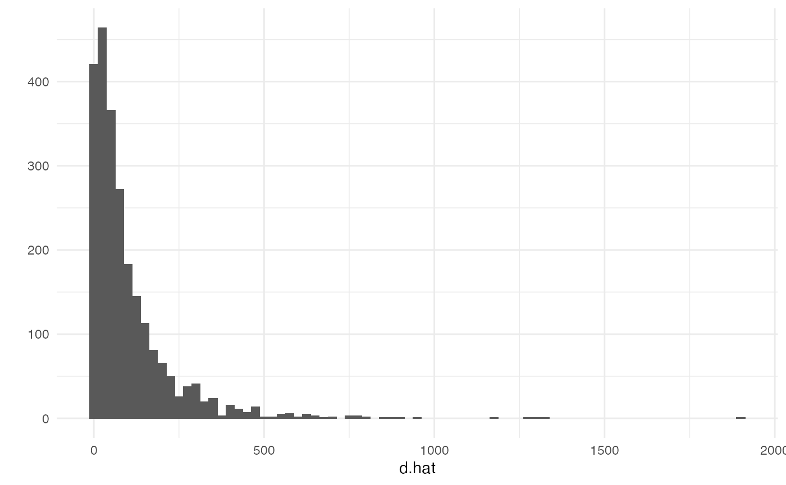
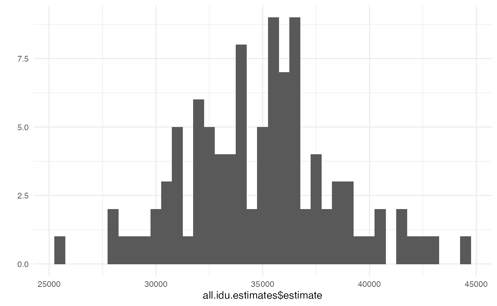
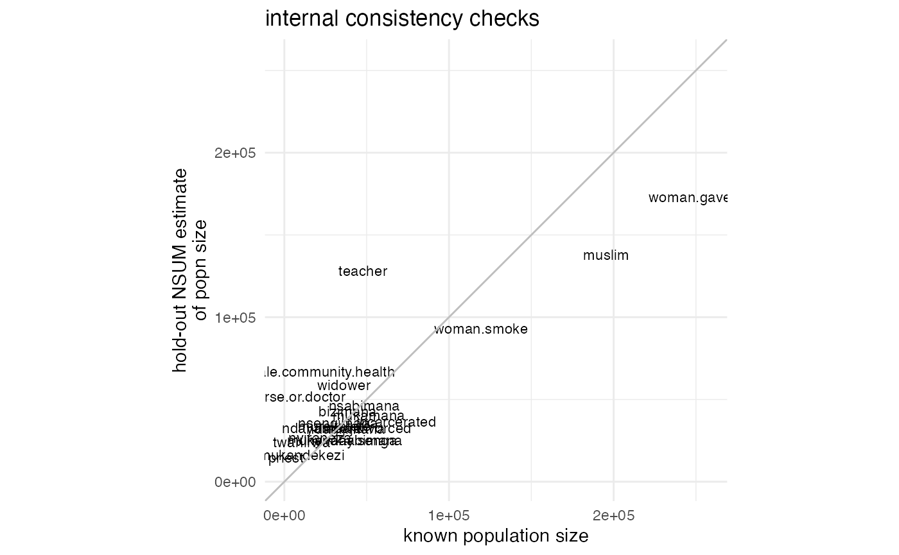

Analyzing network scale-up data using the networkreporting package
Dennis M. Feehan
2020-11-08
network_scaleup.RmdIntroduction
The networkreporting package has several tools for analyzing survey data that have been collected using the network scale-up method.
This introduction will assume that you already have the networkreporting package installed. If you don’t, please refer to the introductory vignette (“getting started”) for instructions on how to do this.
Review of the network scale-up method
For the purposes of this vignette, we’ll assume that you have conducted a survey using network scale-up questions in order to estimate the size of a hidden population. Analytically, using the scale-up estimator involves two steps:
- step 1: estimating the size of the survey respondents’ personal networks (their degrees)
- step 2: estimating the size of the hidden population by combining the estimated network sizes (from step 1) with the number of connections to the hidden population
We’ll quickly review each of these steps, and then we’ll show how to use the package to carry the estimation out.
Step 1: estimating network sizes
Here, we will use the known population estimator for respondents’ degrees (Killworth et al., 1998; Feehan and Salganik, 2016). In order to estimate the degree of the \(i\) th survey respondent, we use
\[ \begin{align} \label{eqn:kpdegree} \hat{d_i} = \sum_{j=1}^{K} y_{ij} \times \frac{N}{\sum_{j=1}^{K} N_j}, \end{align} \]
where \(N\) is the total size of the population, \(N_j\) is the size of the \(j\) th population of known size, and \(y_{ij}\) is the number of connections that survey respondent \(i\) reports between herself and members of the \(j\) th population of known size.
Preparing data
In order to use the package, we will assume that you start with two datasets: the first is a survey containing information collected from respondents about their personal networks; the second is information about the sizes of several populations.
The example data for this vignette are provided with the networkreporting package, and can be loaded by typing
library(networkreporting) library(surveybootstrap) ## column names for connections to hidden population numbers hidden.q <- c("sex.workers", "msm", "idu", "clients") ## column names for connections to groups of known size hm.q <- c("widower", "nurse.or.doctor", "male.community.health", "teacher", "woman.smoke", "priest", "civil.servant", "woman.gave.birth", "muslim", "incarcerated", "judge", "man.divorced", "treatedfortb", "nsengimana", "murekatete", "twahirwa", "mukandekezi", "nsabimana", "mukamana", "ndayambaje", "nyiraneza", "bizimana", "nyirahabimana", "ndagijimana", "mukandayisenga", "died") ## size of the entire population tot.pop.size <- 10718378
The example data include two datasets: one has all of the responses from a network scale-up survey, and the other has the known population sizes for use with the known population estimator.
Preparing the known population data
The demo known population data are in example.knownpop.dat:
example.knownpop.dat## known.popn size
## 1 widower 36147
## 2 nurse.or.doctor 7807
## 3 male.community.health 22000
## 4 teacher 47745
## 5 woman.smoke 119438
## 6 priest 1004
## 7 woman.gave.birth 256164
## 8 muslim 195449
## 9 incarcerated 68000
## 10 man.divorced 50698
## 11 nsengimana 32528
## 12 murekatete 30531
## 13 twahirwa 10420
## 14 mukandekezi 10520
## 15 nsabimana 48560
## 16 mukamana 51449
## 17 ndayambaje 22724
## 18 nyiraneza 21705
## 19 bizimana 38497
## 20 nyirahabimana 42727
## 21 ndagijimana 37375
## 22 mukandayisenga 35055example.knownpop.dat is very simple: one column has a name for each known population, and the other has its toal size. We expect that users will typically start with a small dataset like this one. When using the networkreporting package, it is more useful to have a vector whose entries are known population sizes and whose names are the known population names. The df.to.kpvec function makes it easy for us to create it:
kp.vec <- df.to.kpvec(example.knownpop.dat, kp.var="known.popn", kp.value="size") kp.vec
## widower nurse.or.doctor male.community.health
## 36147 7807 22000
## teacher woman.smoke priest
## 47745 119438 1004
## woman.gave.birth muslim incarcerated
## 256164 195449 68000
## man.divorced nsengimana murekatete
## 50698 32528 30531
## twahirwa mukandekezi nsabimana
## 10420 10520 48560
## mukamana ndayambaje nyiraneza
## 51449 22724 21705
## bizimana nyirahabimana ndagijimana
## 38497 42727 37375
## mukandayisenga
## 35055Finally, we also need to know the total size of the population we are making estimates about. In this case, let’s assume that we’re working in a country of 10 million people:
# total size of the population tot.pop.size <- 10e6
Preparing the survey data
Now let’s take a look at the demo survey dataset, which is called example.survey:
head(example.survey)
## id cluster region indweight sex age.cat widower nurse.or.doctor
## 1 1.1.1 1 Kigali City 0.330602 Male [25,35) 3 2
## 2 1.1.2 1 Kigali City 0.330602 Male [25,35) 0 2
## 3 1.1.3 1 Kigali City 0.330602 Male [25,35) 2 8
## 4 1.1.4 1 Kigali City 0.330602 Male [25,35) 0 1
## 5 1.1.5 1 Kigali City 0.330602 Male [25,35) 0 0
## 6 1.1.6 1 Kigali City 0.330602 Male [25,35) 7 4
## male.community.health teacher woman.smoke priest civil.servant
## 1 1 5 1 0 5
## 2 1 5 0 0 5
## 3 0 3 0 0 50
## 4 0 0 0 0 5
## 5 0 0 0 0 5
## 6 0 8 2 0 6
## woman.gave.birth muslim incarcerated judge man.divorced treatedfortb
## 1 3 4 2 3 2 0
## 2 3 0 2 3 1 0
## 3 4 3 0 0 2 0
## 4 0 0 0 0 0 0
## 5 0 0 0 0 1 0
## 6 3 4 3 0 1 0
## nsengimana murekatete twahirwa mukandekezi nsabimana mukamana ndayambaje
## 1 0 0 2 1 2 3 1
## 2 3 2 0 0 1 0 0
## 3 0 0 0 1 2 0 0
## 4 1 0 0 0 0 0 0
## 5 0 0 0 0 0 0 0
## 6 1 1 0 0 0 0 0
## nyiraneza bizimana nyirahabimana ndagijimana mukandayisenga died sex.workers
## 1 0 2 0 1 0 0 0
## 2 0 0 0 0 0 1 0
## 3 0 0 0 0 0 2 0
## 4 0 0 0 0 0 0 0
## 5 0 0 0 0 0 0 0
## 6 0 0 0 0 0 4 0
## msm idu clients
## 1 0 0 2
## 2 0 0 1
## 3 0 0 0
## 4 0 0 0
## 5 0 0 0
## 6 0 0 10The columns fall into a few categories:
- an id variable for each respondent:
id - information related to the sampling design of the survey:
cluster,region, andindweight. - demographic characteristics of the respondents:
sexandage.cat - responses to questiona bout populations whose total size is known:
widower, …,mukandayisenga - questions about hidden populations:
died, …,clients
This is the general form that your survey dataset should have.
Topcoding
Many network scale-up studies have topcoded the responses to the aggregate relational data questions. This means that researchers considered any responses above a certain value, called the topcode, to be implausible. Before proceeding with the analysis, researchers substitute the maximum plausible value in for the implausible ones. For example, in many studies, researchers replaced responses with the value 31 or higher with the value 30 before conducting their analysis (see Zheng, Salganik, and Gelman 2006).
We won’t discuss whether or not this is advisable here, but this is currently a common practice in scale-up studies. If you wish to follow it, you can use the topcode.data function. For example, let’s topcode the responses to the questions about populations of known size to the value 30. First, we’ll examine the distribution of the responses before topcoding:
## make a vector with the list of known population names from ## our dataset of known population totals known.popn.vars <- paste(example.knownpop.dat$known.popn) ## before topcoding: max. response for several popns is > 30 summary(example.survey[,known.popn.vars])
## widower nurse.or.doctor male.community.health teacher
## Min. : 0.0000 Min. : 0.0000 Min. : 0.000 Min. : 0.000
## 1st Qu.: 0.0000 1st Qu.: 0.0000 1st Qu.: 0.000 1st Qu.: 0.000
## Median : 0.0000 Median : 0.0000 Median : 0.000 Median : 0.000
## Mean : 0.6101 Mean : 0.5112 Mean : 0.724 Mean : 1.356
## 3rd Qu.: 0.0000 3rd Qu.: 0.0000 3rd Qu.: 1.000 3rd Qu.: 1.000
## Max. :95.0000 Max. :40.0000 Max. :95.000 Max. :95.000
##
## woman.smoke priest woman.gave.birth muslim
## Min. : 0.000 Min. : 0.0000 Min. : 0.000 Min. : 0.000
## 1st Qu.: 0.000 1st Qu.: 0.0000 1st Qu.: 0.000 1st Qu.: 0.000
## Median : 0.000 Median : 0.0000 Median : 1.000 Median : 0.000
## Mean : 1.022 Mean : 0.1484 Mean : 1.885 Mean : 2.094
## 3rd Qu.: 1.000 3rd Qu.: 0.0000 3rd Qu.: 3.000 3rd Qu.: 1.000
## Max. :95.000 Max. :25.0000 Max. :30.000 Max. :95.000
## NA's :1
## incarcerated man.divorced nsengimana murekatete
## Min. : 0.0000 Min. : 0.0000 Min. :0.0000 Min. : 0.0000
## 1st Qu.: 0.0000 1st Qu.: 0.0000 1st Qu.:0.0000 1st Qu.: 0.0000
## Median : 0.0000 Median : 0.0000 Median :0.0000 Median : 0.0000
## Mean : 0.4348 Mean : 0.3367 Mean :0.3603 Mean : 0.3425
## 3rd Qu.: 0.0000 3rd Qu.: 0.0000 3rd Qu.:0.0000 3rd Qu.: 1.0000
## Max. :95.0000 Max. :20.0000 Max. :8.0000 Max. :12.0000
##
## twahirwa mukandekezi nsabimana mukamana
## Min. : 0.0000 Min. :0.000 Min. : 0.0000 Min. : 0.0000
## 1st Qu.: 0.0000 1st Qu.:0.000 1st Qu.: 0.0000 1st Qu.: 0.0000
## Median : 0.0000 Median :0.000 Median : 0.0000 Median : 0.0000
## Mean : 0.2394 Mean :0.165 Mean : 0.4705 Mean : 0.4144
## 3rd Qu.: 0.0000 3rd Qu.:0.000 3rd Qu.: 1.0000 3rd Qu.: 1.0000
## Max. :10.0000 Max. :7.000 Max. :20.0000 Max. :15.0000
##
## ndayambaje nyiraneza bizimana nyirahabimana
## Min. : 0.0000 Min. : 0.0000 Min. : 0.0000 Min. : 0.000
## 1st Qu.: 0.0000 1st Qu.: 0.0000 1st Qu.: 0.0000 1st Qu.: 0.000
## Median : 0.0000 Median : 0.0000 Median : 0.0000 Median : 0.000
## Mean : 0.3296 Mean : 0.2685 Mean : 0.4331 Mean : 0.261
## 3rd Qu.: 0.0000 3rd Qu.: 0.0000 3rd Qu.: 1.0000 3rd Qu.: 0.000
## Max. :30.0000 Max. :10.0000 Max. :12.0000 Max. :17.000
##
## ndagijimana mukandayisenga
## Min. : 0.0000 Min. : 0.0000
## 1st Qu.: 0.0000 1st Qu.: 0.0000
## Median : 0.0000 Median : 0.0000
## Mean : 0.3279 Mean : 0.2577
## 3rd Qu.: 0.0000 3rd Qu.: 0.0000
## Max. :10.0000 Max. :20.0000
## Several populations, including widower, male.community.health, teacher, woman.smoke, muslim, and incarcerated have maximum values that are very high. (It turns out that 95 is the highest value that could be recorded during the interviews; if respondents said that they were connected to more than 95 people in the group, the interviewers wrote 95 down.)
Now we use the topcode.data function to topcode all of the responses at 30:
example.survey <- topcode.data(example.survey, vars=known.popn.vars, max=30) ## after topcoding: max. response for all popns is 30 summary(example.survey[,known.popn.vars])
## widower nurse.or.doctor male.community.health teacher
## Min. : 0.0000 Min. : 0.0000 Min. : 0.000 Min. : 0.000
## 1st Qu.: 0.0000 1st Qu.: 0.0000 1st Qu.: 0.000 1st Qu.: 0.000
## Median : 0.0000 Median : 0.0000 Median : 0.000 Median : 0.000
## Mean : 0.5831 Mean : 0.5062 Mean : 0.653 Mean : 1.216
## 3rd Qu.: 0.0000 3rd Qu.: 0.0000 3rd Qu.: 1.000 3rd Qu.: 1.000
## Max. :30.0000 Max. :30.0000 Max. :30.000 Max. :30.000
##
## woman.smoke priest woman.gave.birth muslim
## Min. : 0.0000 Min. : 0.0000 Min. : 0.000 Min. : 0.000
## 1st Qu.: 0.0000 1st Qu.: 0.0000 1st Qu.: 0.000 1st Qu.: 0.000
## Median : 0.0000 Median : 0.0000 Median : 1.000 Median : 0.000
## Mean : 0.9638 Mean : 0.1484 Mean : 1.885 Mean : 1.468
## 3rd Qu.: 1.0000 3rd Qu.: 0.0000 3rd Qu.: 3.000 3rd Qu.: 1.000
## Max. :30.0000 Max. :25.0000 Max. :30.000 Max. :30.000
## NA's :1
## incarcerated man.divorced nsengimana murekatete
## Min. : 0.0000 Min. : 0.0000 Min. :0.0000 Min. : 0.0000
## 1st Qu.: 0.0000 1st Qu.: 0.0000 1st Qu.:0.0000 1st Qu.: 0.0000
## Median : 0.0000 Median : 0.0000 Median :0.0000 Median : 0.0000
## Mean : 0.3807 Mean : 0.3367 Mean :0.3603 Mean : 0.3425
## 3rd Qu.: 0.0000 3rd Qu.: 0.0000 3rd Qu.:0.0000 3rd Qu.: 1.0000
## Max. :30.0000 Max. :20.0000 Max. :8.0000 Max. :12.0000
##
## twahirwa mukandekezi nsabimana mukamana
## Min. : 0.0000 Min. :0.000 Min. : 0.0000 Min. : 0.0000
## 1st Qu.: 0.0000 1st Qu.:0.000 1st Qu.: 0.0000 1st Qu.: 0.0000
## Median : 0.0000 Median :0.000 Median : 0.0000 Median : 0.0000
## Mean : 0.2394 Mean :0.165 Mean : 0.4705 Mean : 0.4144
## 3rd Qu.: 0.0000 3rd Qu.:0.000 3rd Qu.: 1.0000 3rd Qu.: 1.0000
## Max. :10.0000 Max. :7.000 Max. :20.0000 Max. :15.0000
##
## ndayambaje nyiraneza bizimana nyirahabimana
## Min. : 0.0000 Min. : 0.0000 Min. : 0.0000 Min. : 0.000
## 1st Qu.: 0.0000 1st Qu.: 0.0000 1st Qu.: 0.0000 1st Qu.: 0.000
## Median : 0.0000 Median : 0.0000 Median : 0.0000 Median : 0.000
## Mean : 0.3296 Mean : 0.2685 Mean : 0.4331 Mean : 0.261
## 3rd Qu.: 0.0000 3rd Qu.: 0.0000 3rd Qu.: 1.0000 3rd Qu.: 0.000
## Max. :30.0000 Max. :10.0000 Max. :12.0000 Max. :17.000
##
## ndagijimana mukandayisenga
## Min. : 0.0000 Min. : 0.0000
## 1st Qu.: 0.0000 1st Qu.: 0.0000
## Median : 0.0000 Median : 0.0000
## Mean : 0.3279 Mean : 0.2577
## 3rd Qu.: 0.0000 3rd Qu.: 0.0000
## Max. :10.0000 Max. :20.0000
## If you look at the help page for topcode.data, you’ll see that it can also handle situations where the variables can take on special codes for missing values, refusals, and so forth.
Estimating network sizes
Now that we have finished preparing the data, we turn to esimating the sizes of each respondent’s personal network. To do this using the known population estimator, we use the kp.degree.estimator function:
d.hat <- kp.individual.estimator_(resp.data=example.survey, known.populations=known.popn.vars, total.kp.size=sum(kp.vec), alter.popn.size=tot.pop.size)$dbar.Fcell.F
## Warning: `select_()` is deprecated as of dplyr 0.7.0.
## Please use `select()` instead.
## This warning is displayed once every 8 hours.
## Call `lifecycle::last_warnings()` to see where this warning was generated.## NOTE: Ignoring any rows with missingness on any of the report variables.## Warning: `rename_()` is deprecated as of dplyr 0.7.0.
## Please use `rename()` instead.
## This warning is displayed once every 8 hours.
## Call `lifecycle::last_warnings()` to see where this warning was generated.summary(d.hat)
## Min. 1st Qu. Median Mean 3rd Qu. Max.
## 0.00 25.28 58.99 101.21 126.42 1904.69We can examine the results with a histogram
library(ggplot2) # we'll use qplot from ggplot2 for plots theme_set(theme_minimal())
qplot(d.hat, binwidth=25)

Now let’s append the degree estimates to the survey reports dataframe:
example.survey$d.hat <- d.hat
Variance estimation
In order to estimate the sampling uncertainty of our estimated totals, we can use the rescaled bootstrap technique; see Feehan and Salganik 2016 for more about the rescaled boostrap and how it can be applied to the network scale-up method. In order to use the rescaled boostrap, you need to be able to specify the sampling design of your study. In particular, you need to be able to describe the stratifcation (if any) and the primary sampling units used in the study.
idu.est <- bootstrap.estimates(## this describes the sampling design of the ## survey; here, the PSUs are given by the ## variable cluster, and the strata are given ## by the variable region survey.design = ~ cluster + strata(region), ## the number of bootstrap resamples to obtain ## (NOTE: in practice, you should use more than 100. ## this keeps building the package relatively fast) num.reps=100, ## this is the name of the function ## we want to use to produce an estimate ## from each bootstrapped dataset estimator.fn="nsum.estimator", ## these are the sampling weights weights="indweight", ## this is the name of the type of bootstrap ## we wish to use bootstrap.fn="rescaled.bootstrap.sample", ## our dataset survey.data=example.survey, ## other parameters we need to pass ## to the nsum.estimator function d.hat.vals=d.hat, total.popn.size=tot.pop.size, y.vals="clients", missing="complete.obs")
## Warning: `group_indices_()` is deprecated as of dplyr 0.7.0.
## Please use `group_indices()` instead.
## This warning is displayed once every 8 hours.
## Call `lifecycle::last_warnings()` to see where this warning was generated.## Warning: The `...` argument of `group_keys()` is deprecated as of dplyr 1.0.0.
## Please `group_by()` first
## This warning is displayed once every 8 hours.
## Call `lifecycle::last_warnings()` to see where this warning was generated.By default, bootstrap.estimates produces a list with num.reps entries; each entry is the result of calling the estimator function on one bootstrap resample.
Next, you can write a bit of code that will help us put all of these results together, for plotting and summarizing
library(plyr) ## combine the estimates together in one data frame ## (bootstrap.estimates gives us a list) all.idu.estimates <- ldply(idu.est, function(x) { data.frame(estimate=x$estimate) })
We can examine the summarized results with a histogram or with summarize.
## look at a histogram of the results qplot(all.idu.estimates$estimate, binwidth=500)

## summarize the results summary(all.idu.estimates$estimate)
## Min. 1st Qu. Median Mean 3rd Qu. Max.
## 26327 31563 35119 35002 38297 44420To produce 95% intervals using the percentile method you can do something like this
## 2.5% 97.5%
## 27001.95 43213.31Internal consistency checks
If you want to run internal consistency checks (see e.g. Feehan et al., 2016, Fig 3), you can use the nsum.internal.consistency function. We specify that we wish to use only complete observations (ie, we will remove rows that have any missing values from our calculations).
ic.result <- nsum.internal.consistency(survey.data=example.survey, known.popns=kp.vec, missing="complete.obs", killworth.se=TRUE, total.popn.size=tot.pop.size, kp.method=TRUE, return.plot=TRUE)
## NOTE: Ignoring any rows with missingness on any of the report variables.## Warning in sqrt((p.hat * (1 - p.hat))/toret$sum.d.hat): NaNs produced## Warning in sqrt((p.hat.raw * (1 - p.hat.raw))/sum(raw.d.hat.vals[touse.idx])):
## NaNs produced## NOTE: Ignoring any rows with missingness on any of the report variables.## Warning in sqrt((p.hat * (1 - p.hat))/toret$sum.d.hat): NaNs produced
## Warning in sqrt((p.hat * (1 - p.hat))/toret$sum.d.hat): NaNs produced## NOTE: Ignoring any rows with missingness on any of the report variables.## Warning in sqrt((p.hat * (1 - p.hat))/toret$sum.d.hat): NaNs produced
## Warning in sqrt((p.hat * (1 - p.hat))/toret$sum.d.hat): NaNs produced## NOTE: Ignoring any rows with missingness on any of the report variables.## Warning in sqrt((p.hat * (1 - p.hat))/toret$sum.d.hat): NaNs produced
## Warning in sqrt((p.hat * (1 - p.hat))/toret$sum.d.hat): NaNs produced## NOTE: Ignoring any rows with missingness on any of the report variables.## Warning in sqrt((p.hat * (1 - p.hat))/toret$sum.d.hat): NaNs produced
## Warning in sqrt((p.hat * (1 - p.hat))/toret$sum.d.hat): NaNs produced## NOTE: Ignoring any rows with missingness on any of the report variables.## Warning in sqrt((p.hat * (1 - p.hat))/toret$sum.d.hat): NaNs produced
## Warning in sqrt((p.hat * (1 - p.hat))/toret$sum.d.hat): NaNs produced## NOTE: Ignoring any rows with missingness on any of the report variables.## Warning in sqrt((p.hat * (1 - p.hat))/toret$sum.d.hat): NaNs produced
## Warning in sqrt((p.hat * (1 - p.hat))/toret$sum.d.hat): NaNs produced## NOTE: Ignoring any rows with missingness on any of the report variables.## Warning in sqrt((p.hat * (1 - p.hat))/toret$sum.d.hat): NaNs produced
## Warning in sqrt((p.hat * (1 - p.hat))/toret$sum.d.hat): NaNs produced## NOTE: Ignoring any rows with missingness on any of the report variables.## Warning in sqrt((p.hat * (1 - p.hat))/toret$sum.d.hat): NaNs produced
## Warning in sqrt((p.hat * (1 - p.hat))/toret$sum.d.hat): NaNs produced## NOTE: Ignoring any rows with missingness on any of the report variables.## Warning in sqrt((p.hat * (1 - p.hat))/toret$sum.d.hat): NaNs produced
## Warning in sqrt((p.hat * (1 - p.hat))/toret$sum.d.hat): NaNs produced## NOTE: Ignoring any rows with missingness on any of the report variables.## Warning in sqrt((p.hat * (1 - p.hat))/toret$sum.d.hat): NaNs produced
## Warning in sqrt((p.hat * (1 - p.hat))/toret$sum.d.hat): NaNs produced## NOTE: Ignoring any rows with missingness on any of the report variables.## Warning in sqrt((p.hat * (1 - p.hat))/toret$sum.d.hat): NaNs produced
## Warning in sqrt((p.hat * (1 - p.hat))/toret$sum.d.hat): NaNs produced## NOTE: Ignoring any rows with missingness on any of the report variables.## Warning in sqrt((p.hat * (1 - p.hat))/toret$sum.d.hat): NaNs produced
## Warning in sqrt((p.hat * (1 - p.hat))/toret$sum.d.hat): NaNs produced## NOTE: Ignoring any rows with missingness on any of the report variables.## Warning in sqrt((p.hat * (1 - p.hat))/toret$sum.d.hat): NaNs produced
## Warning in sqrt((p.hat * (1 - p.hat))/toret$sum.d.hat): NaNs produced## NOTE: Ignoring any rows with missingness on any of the report variables.## Warning in sqrt((p.hat * (1 - p.hat))/toret$sum.d.hat): NaNs produced
## Warning in sqrt((p.hat * (1 - p.hat))/toret$sum.d.hat): NaNs produced## NOTE: Ignoring any rows with missingness on any of the report variables.## Warning in sqrt((p.hat * (1 - p.hat))/toret$sum.d.hat): NaNs produced
## Warning in sqrt((p.hat * (1 - p.hat))/toret$sum.d.hat): NaNs produced## NOTE: Ignoring any rows with missingness on any of the report variables.## Warning in sqrt((p.hat * (1 - p.hat))/toret$sum.d.hat): NaNs produced
## Warning in sqrt((p.hat * (1 - p.hat))/toret$sum.d.hat): NaNs produced## NOTE: Ignoring any rows with missingness on any of the report variables.## Warning in sqrt((p.hat * (1 - p.hat))/toret$sum.d.hat): NaNs produced
## Warning in sqrt((p.hat * (1 - p.hat))/toret$sum.d.hat): NaNs produced## NOTE: Ignoring any rows with missingness on any of the report variables.## Warning in sqrt((p.hat * (1 - p.hat))/toret$sum.d.hat): NaNs produced
## Warning in sqrt((p.hat * (1 - p.hat))/toret$sum.d.hat): NaNs produced## NOTE: Ignoring any rows with missingness on any of the report variables.## Warning in sqrt((p.hat * (1 - p.hat))/toret$sum.d.hat): NaNs produced
## Warning in sqrt((p.hat * (1 - p.hat))/toret$sum.d.hat): NaNs produced## NOTE: Ignoring any rows with missingness on any of the report variables.## Warning in sqrt((p.hat * (1 - p.hat))/toret$sum.d.hat): NaNs produced
## Warning in sqrt((p.hat * (1 - p.hat))/toret$sum.d.hat): NaNs produced## NOTE: Ignoring any rows with missingness on any of the report variables.## Warning in sqrt((p.hat * (1 - p.hat))/toret$sum.d.hat): NaNs produced
## Warning in sqrt((p.hat * (1 - p.hat))/toret$sum.d.hat): NaNs producedNow ic.result is a list that has a summary of the results in the entry results
ic.result$results
## name nsum.holdout.est known.size d.hat.sum killworth.se
## 1 widower 244007444 36147 57.49825 NaN
## 2 nurse.or.doctor 215600220 7807 56.49345 NaN
## 3 male.community.health 278286292 22000 56.45265 NaN
## 4 teacher 533095472 47745 54.86822 NaN
## 5 woman.smoke 387010426 119438 59.92087 NaN
## 6 priest 61640323 1004 57.91663 NaN
## 7 woman.gave.birth 719886921 256164 62.99600 NaN
## 8 muslim 573292400 195449 61.57659 NaN
## 9 incarcerated 152201996 68000 60.18318 NaN
## 10 man.divorced 136155139 50698 59.49096 NaN
## 11 nsengimana 148368880 32528 58.43543 NaN
## 12 murekatete 141037969 30531 58.42398 NaN
## 13 twahirwa 99426394 10420 57.93230 NaN
## 14 mukandekezi 68092036 10520 58.30344 NaN
## 15 nsabimana 192850241 48560 58.69840 NaN
## 16 mukamana 168600281 51449 59.13395 NaN
## 17 ndayambaje 136497840 22724 58.09616 NaN
## 18 nyiraneza 110713185 21705 58.34897 NaN
## 19 bizimana 178508708 38497 58.37250 NaN
## 20 nyirahabimana 105618615 42727 59.45922 NaN
## 21 ndagijimana 134080575 37375 58.84521 NaN
## 22 mukandayisenga 104942854 35055 59.07977 NaN
## killworth.se.wgtdenom err abserr sqerr relerr
## 1 NaN 243971297 243971297 5.952199e+16 6749.420
## 2 NaN 215592413 215592413 4.648009e+16 27615.270
## 3 NaN 278264292 278264292 7.743102e+16 12648.377
## 4 NaN 533047727 533047727 2.841399e+17 11164.472
## 5 NaN 386890988 386890988 1.496846e+17 3239.262
## 6 NaN 61639319 61639319 3.799406e+15 61393.744
## 7 NaN 719630757 719630757 5.178684e+17 2809.258
## 8 NaN 573096951 573096951 3.284401e+17 2932.207
## 9 NaN 152133996 152133996 2.314475e+16 2237.265
## 10 NaN 136104441 136104441 1.852442e+16 2684.612
## 11 NaN 148336352 148336352 2.200367e+16 4560.267
## 12 NaN 141007438 141007438 1.988310e+16 4618.500
## 13 NaN 99415974 99415974 9.883536e+15 9540.880
## 14 NaN 68081516 68081516 4.635093e+15 6471.627
## 15 NaN 192801681 192801681 3.717249e+16 3970.381
## 16 NaN 168548832 168548832 2.840871e+16 3276.037
## 17 NaN 136475116 136475116 1.862546e+16 6005.770
## 18 NaN 110691480 110691480 1.225260e+16 5099.815
## 19 NaN 178470211 178470211 3.185162e+16 4635.951
## 20 NaN 105575888 105575888 1.114627e+16 2470.941
## 21 NaN 134043200 134043200 1.796758e+16 3586.440
## 22 NaN 104907799 104907799 1.100565e+16 2992.663Since we passed the argument return.plot=TRUE to the function, we also get a plot:
print(ic.result$plot)

This plot is a ggplot2 object, so we can customize it if we want. As a very simple example, we can change the title:

The ggplot2 website has more information on modifying ggplot2 objects.